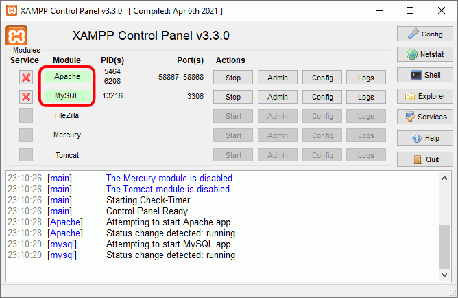

En este curso se utilizará la misma instalación de Apache utilizada en el curso de Programación en PHP. En el apartado Lecciones de software > XAMPP de los apuntes de PHP se explica la instalación y configuración de Apache y MySQL (mediante XAMPP).
Para poder ejecutar las aplicaciones web, se deberá iniciar previamente el servidor Apache y el servidor MySQL desde el panel de control de XAMPP.

Las aplicaciones web se descargarán como archivos comprimidos que se deberán descomprimir en la misma carpeta, por ejemplo, en:
Cada aplicación se guardará en su propia carpeta. Se recomienda que el nombre de la carpeta sea simplemente el nombre de la aplicación, en minúsculas y sin incluir el número de versión. Únicamente cuando se instalen varias versiones de la misma aplicación, cada una en supropia carpeta, se añadirá un número al nombre de la aplicación (_1, _2, etc.)
Por ejemplo, en el caso de la aplicación web phpMyAdmin se creará la carpeta:
Para poder ejecutar las aplicaciones, se deberá crear un alias en el archivo de configuración de Apache httpd.conf. La ruta del alias será /webapps, de manera que un único alias sea suficiente para todas las aplicaciones.
En general, no se editará el código fuente de las aplicaciones web, pero ocasionalmente si que se modificará algún fichero en concreto.
Para esas modificaciones puntuales, se recomienda utilizar un editor ligero como Notepad++
Si se quiere utilizar Eclipse PDT, se recomienda crear un workspace específico. Se recomienda:
Al descomprimir una nueva aplicación web se deberá actualizar la vista del Explorador PHP de Eclipse.
Para poder ejecutar las aplicaciones desde Eclipse PDT, se deberá crear otro alias en el archivo de configuración de Apache httpd.conf. La ruta del alias será /Nombre-de-alumno/webapps, de manera que un único alias sea suficiente para todas las aplicaciones.
El inconveniente de utilizar Eclipse PDT es que como Eclipse PDT revisa y comprueba todos los archivos, a medida que vayamos instalando aplicaciones web, ese proceso tardará cada vez más tiempo.
Al ejecutar la página principal de cada aplicación web desde Eclipse PDT, se abrirá la página web en el navegador. Por ejemplo, en el caso de phpMyAdmin,
Cree una página web index.html en la carpeta Aplicaciones que sirva de índice para entrar en las diferentes aplicaciones sin necesidad de entrar en Eclipse. Por ejemplo:
<!DOCTYPE html>
<html lang="es">
<head>
<meta charset="utf-8" />
<title>Aplicaciones web</title>
<meta name="viewport" content="width=device-width, initial-scale=1.0" />
</head>
<body>
<h1>Aplicaciones web</h1>
<h2>Enlaces a aplicaciones</h2>
<ul>
<li><a href="http://localhost/webapps/phpmyadmin/">phpMyAdmin</a></li>
</ul>
<h2>Alias a aplicaciones</h2>
<ul>
<li><a href="http://localhost/phpmyadmin2/">phpMyAdmin</a></li>
</ul>
</body>
</html>